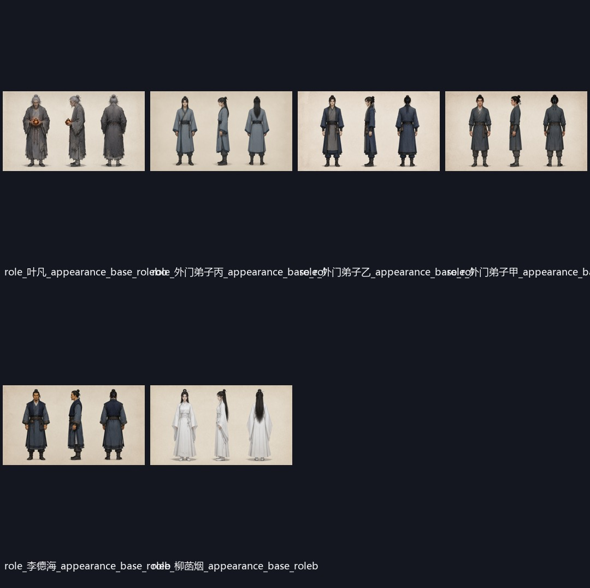
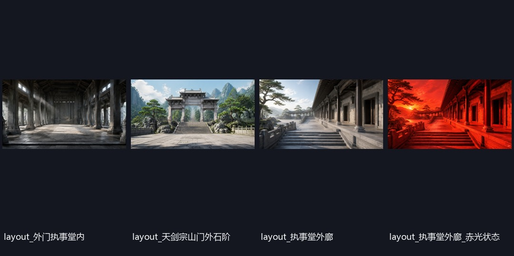
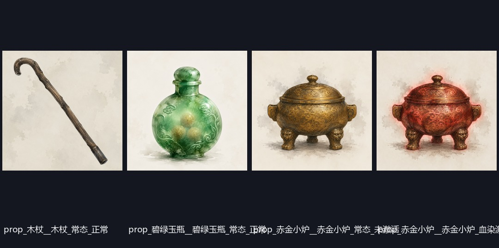
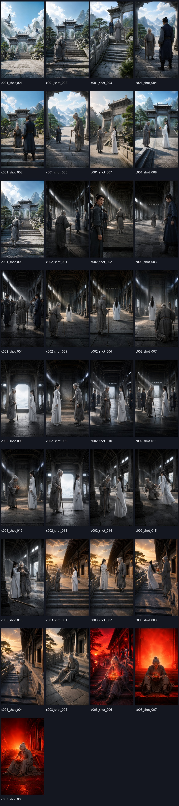
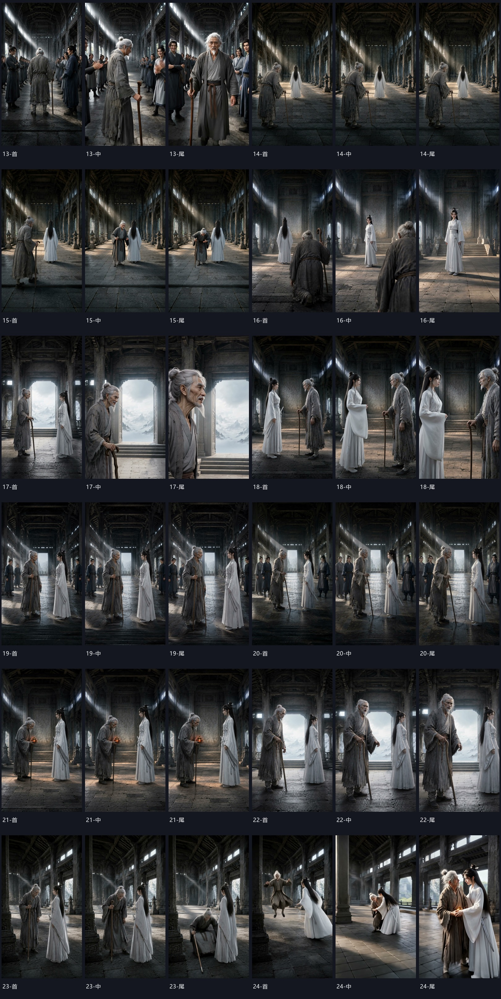
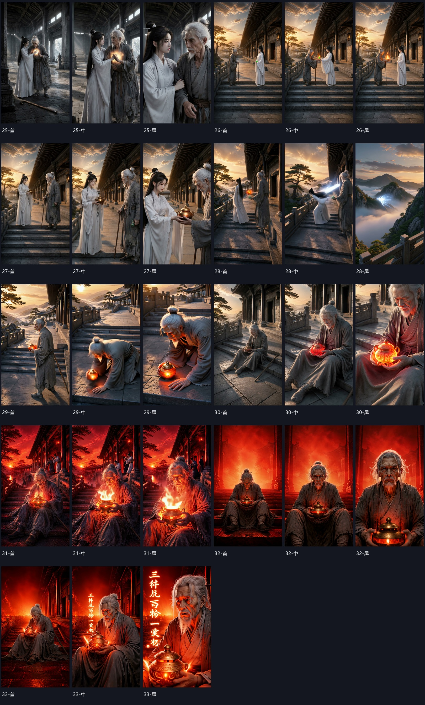

最关键的代码缺陷是把“瘫坐时手持已激活小炉”等未来剧情动作写入永久角色 appearance.desc，再注入每个关键帧提示。小炉提前出现、闪回年龄错误、玉瓶被替换、动作物理异常都由此向下游扩散。
Full-pipeline forensic audit · 2026.07.28
成片问题是工作流
系统性失控，不是单镜偶发。
审计对象：config.saodi_bashinian_terra_image2.yaml 对应的 27 个已完成节点、69 张静态图、33 个镜头视频、最终拼接成片、运行日志与 ASR。结论聚焦可复用框架修复；本次中间产物只作为证据与回归样本。
Audit footprint
审计覆盖面
不是只看成片：每个已落盘节点输出、每类图片资产、每个视频首/中/尾帧、最终时间线与日志均已对齐。
27
完成节点
其中 3 个只有集级输出、无顶层汇总
69
静态视觉资产
1 主视觉 · 6 角色板 · 4 道具 · 4 场景 · 21 背景 · 33 关键帧
99
视频抽样帧
33 镜 × 首 / 中 / 尾
+39.6%
成片超出目标时长
全量镜头 219.39s；机械裁边后 209.43s
Failure propagation
错误如何沿节点放大
这条因果链说明为什么不能修中间文件：只要节点契约不变，下一项目仍会复现。
角色永久描述混入“瘫坐、持炉、御剑、取玉瓶”等事件态。
appearance.desc 被当作角色标签拼入关键帧参考说明。
第 21 镜承诺沉默时，小炉已发光；闪回第 8 镜仍是老年叶凡。
道具变形、坠倒变腾空、血触发缺失、文字生成乱码。
视频审计没运行，Postgen ASR 又因 WhisperX / PyTorch 兼容错误中断。
占比为基于可观测缺陷的根因归因，用于排改造优先级；不是模型能力基准分。
Visual evidence
直接证据
三套美术方向互相冲突；关键剧情状态在图像阶段已经错位，视频节点只是把错位动画化。
风格冲突
主视觉：二维水墨 / 平面动画
模板硬编码“必须为二维国漫”，直接覆盖配置中的“3D 国漫、风格化 CG”。该图随后又作为风格参考影响角色板。

身份资产
角色板：宣纸水墨设定图
与主视觉和关键帧均不一致；少年叶凡没有独立 appearance，三名弟子辨识度不足。

场景资产
场景：偏摄影写实 / 概念图
与二维角色板的材质语言冲突；赤光 variant 变成全屏红滤镜，丢失局部光源逻辑。

模板硬编码
道具：明确要求二维水墨
prop_prompt/default.md 排除了 3D 产品渲染，无法与目标 CG 世界统一。

关键帧瓶颈
33 张关键帧：转为近真人摄影感，构图重复且状态泄漏
执事堂连续十余镜以同一中轴两人站位为主；第 21 镜小炉提前出现；第 8 镜闪回错误地保留老年叶凡。

剧情阻断
第 21、23、24 镜
沉默镜出现未写入剧本的语音和发光小炉；倒下变成下蹲 / 腾空，接扶动作失真。

道具 / 文字
第 26、29、30、33 镜
玉瓶被火炉抢占；心血触发前小炉已发光；未表现吐血；结尾核心规则文字生成错误。
最终成片 · 720×1280 · 25fps · 209.43 秒 · 33 镜全量硬切 · 无字幕层 / BGM 层 / 完成审计
Node-by-node
27 个已完成节点逐项审计
筛选“阻断”可快速看到必须先改的工作流代码；“通过”表示当前输出本身可靠，不代表其下游一定正确。
| # | 节点 | 判定 | 本次输出证据 | 工作流改造 |
|---|
Node remediation playbook
27 个节点逐项修改方案
这是面向代码实现的工作清单，不是对本次 JSON、图片或视频做手工修补。每项都包含契约变化、代码落点、实现步骤、失败策略与可执行验收条件。
YAML 管剧集设定，代码管确定性，模板只管裸模需要的通用创作约束
YAML 配置
保存剧集相关设定和视觉约束，例如目标时长、画幅、语言、视觉媒介、材质、色板、灯光与审计阈值。
工作流代码
负责 ID、schema 映射、字段筛选、状态查询、预算计算、时间线过滤、冲突检测、引用裁剪、fingerprint、结果校验、缓存、回退和交付状态。
提示词模板
只保留剧集无关、需要裸模完成的语义理解、内容生成、创意设计和主观评价规则；不得硬编码项目标题、路径、人物、道具、剧情或内部字段名。
运行时注入
工作流把 YAML 与上游产物转换成人类可读的任务上下文再发给模型。剧集内容可以作为当前任务输入，但模板本身不得固化这些内容或暴露内部 schema。
9P0：先阻断错误传播
12P1：统一视觉与语义
6P2：效率与可维护性
27全部节点均有 contract smoke
Shot-level evidence
33 镜风险矩阵
点选镜头查看问题。红色 10 镜为交付阻断；黄色镜头多为时长、构图重复、角色负载或运动稳定性问题。
Workflow redesign
直接改工作流：六个代码级落点
不修改本次中间产物。现有 33 镜作为 golden failure set，修完后整链重跑并自动比对。
01
重构角色 / 道具状态契约
把“永久身份”与“当前镜头状态”拆成不同字段，禁止剧情动作进入身份板标签。
RoleAppearance只保留脸、年龄、体型、发型、服装、稳定标志。- 新增
ShotEntityState：姿态、持有物、情绪、受伤、能量状态、时间阶段。 - prop 增加
availability_from_shot/state_at_shot，引用前做时间线校验。
core/schemas.py
role_nodes.py:885–898
shot_asset_nodes.py:169–209
禁止：
appearance.desc = "瘫坐时手持已激活小炉"
02
关键帧提示改为白名单拼装
当前实现直接用 appearance.desc 作为图像标签。改为只拼：身份 invariant + 本镜 state + 被明确引用的 prop state。
- 加入反事实检查：提示中不得出现后续镜头才可用的实体 / 状态。
- 若剧情出现“少年、老年、战损、伪装”等阶段，抽取节点必须产出独立 appearance；缺失即 fail-fast。
- 关键帧生成后先做图像语义审计，再允许 manifest。
shot_asset_nodes.py:699–748
guide =
identity_invariants
+ shot_entity_state
+ allowed_props_only
03
建立唯一视觉风格契约
删除模板中的硬编码“二维水墨”与“非 3D”，把配置解析为结构化 VisualStyleSpec 并传到每个视觉节点。
- 主视觉、角色、道具、场景、关键帧共享 medium / render / material / palette / exclusions。
- 主视觉输出做风格审计，通过后才作为 style reference。
- 检测“2D、宣纸、摄影写实、3D CG”等互斥词，同一项目出现冲突直接拒绝。
key_vision_prompt/default.md:9
prop_prompt/default.md:9
roleboard_prompt/*.md
VisualStyleSpec.medium = "stylized_3d_cg"
04
在分镜层硬约束时长、覆盖与引用预算
clip_to_shots 当前没有收到目标片长，也不校验总时长。需要在调用前给每 clip 分配预算，输出后强校验。
- 总分镜时长限制为目标的 95%–105%，本项目即 142.5–157.5 秒。
- 单对白镜根据字数与语速设最短时长；无对白反应镜通常 2–4 秒。
- 连续同场景必须覆盖 wide / two-shot / close / insert，禁止十余镜同轴重复。
- 视频输入默认关键帧 + 最多 2 个主角色；群演改为场景群众，不挂 3 张独立身份板。
director_service.py:78–106
shot_asset_nodes.py:321–350
assert 0.95*T ≤ Σshot.duration ≤ 1.05*T
assert refs ≤ provider_budget
05
把“可读文字”从生成视频中剥离
当前统一提示先禁止任何文字，又在第 33 镜要求生成精确古字，逻辑自相矛盾。精确文本不能交给视频模型。
- 新增
requires_exact_text与overlay_text。 - 视频只生成无字炉体与发光区域；后期使用 ASS / Canvas / FFmpeg 叠加准确文本。
_kling_native_prompt只在非 text-event 镜头追加全局禁字规则。
generation.py:215–240
postgen/subtitle_pipeline.py
if shot.requires_exact_text:
generate_clean_plate()
compose_overlay()
06
交付必须依赖审计完成，而非“文件存在”
本次视频审计未运行，Postgen 在 source_asr 崩溃后仍出现了可播放的手工拼接成片。需要状态机阻止未审计产物进入 deliverable。
- ASR 后端抽象：优先 faster-whisper；WhisperX 只做可选对齐，避免 PyTorch 2.6 checkpoint 兼容阻断。
- shot video audit 检查身份、动作、道具状态、对白归属、无关语音、精确事件；拒绝则只回退到最早污染节点。
- 最终 compose 要求所有 required gates 为 accepted；否则只输出 preview，并显著标记。
postgen/subtitle_pipeline.py:16–52
video_audit_node.py:67–73
generation.py:446–451
deliverable = all(required_gates == "accepted")
Implementation order
实施顺序
先堵住会污染全链的契约问题，再优化模型提示；否则继续生成只会扩大重做成本。
P0 · 1–2 DAYS
阻断错误传播
- 拆分 identity / shot state。
- 加入时长与实体可用性 validator。
- 修 ASR backend fallback。
- 交付状态依赖 audit accepted。
P1 · 3–5 DAYS
统一视觉与镜头语言
- 结构化 VisualStyleSpec。
- 强制少年 / 老年独立 appearance。
- coverage 与 reference budget。
- 关键帧语义审计前置。
P2 · 1–2 WEEKS
形成可持续生产线
- Golden failure 回归集。
- 自动连续性图与质量分层回退。
- 角色锁声 + 独立 TTS / 环境声轨。
- 成本感知的局部再生成。
Acceptance gates
框架级验收标准
这些规则应写成非 pytest 的 smoke / contract checks，并在生成昂贵视频前尽量失败。
所有视觉提示的 medium / render 不冲突；抽样图像风格分类一致；主视觉不得与配置相反。
任意实体只能在引入镜头之后出现；状态变化必须由明确事件触发；第 21 镜不得看到小炉。
少年 / 老年必须引用不同 appearance；同一 appearance 的脸、发型、服装相似度达阈值。
分镜合计与最终成片均在目标 ±5%；任何编辑方案不得默认保留 100% 素材。
ASR 与剧本按镜头对齐；无对白镜不得检测到清晰人声；角色锁声，不依赖每镜独立原生声。
所有 required audit 有落盘结果且 accepted；失败 / 未运行只能生成 preview，不能标记 final。
Evidence ledger
关键事实索引
• 配置：episode_duration_seconds=150；enable_image_audit=false；enable_llm_audit=false；视觉目标为“高质感东方玄幻 3D 国漫”。
• 模板冲突：prompts/key_vision_prompt/default.md:9 强制二维；prompts/prop_prompt/default.md:9 强制二维并排除 3D。
• 状态污染：role_nodes.py:885–898 将 appearance_desc / brief / visual_features / clothing / prompt_hint 全量串联；shot_asset_nodes.py:194–197 再把它作为关键帧标签。
• 时长缺口：director_service.py:78–106 未把片长预算传给 clip_to_shots；shot_asset_nodes.py:321–350 只校验结构和引用，不校验总时长。
• 文本矛盾：generation.py:235–236 对所有镜头统一禁止文字，而第 33 镜又要求生成精确古字。
• Postgen 中断：日志 21:39:08，WhisperX 加载 pyannote checkpoint 时触发 PyTorch 2.6 weights_only 反序列化错误；后续 source audit / final audit 均未运行。
• 语音异常：large-v3 ASR 在“柳菡烟沉默”第 21 镜识别出未写入剧本的“是你一个说事”；所有镜头 role_audio_ids=[]，角色声线没有跨镜头锁定。